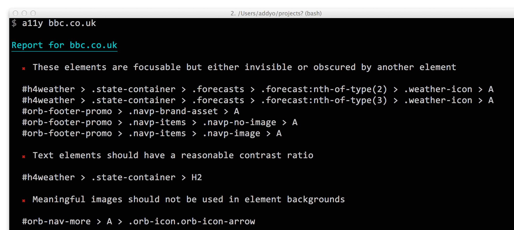

Audit where accessibility can be improved
Run audits against local or remote URLs to return a list of accessibility improvements that can be made. We even point out the DOM elements responsible.
Check an accessible baseline is met
A baseline success report will indicate when you've passed our accessibility tests. Green ticks all around!

Install
You will need Node.js in order to install and use a11y on your machine. Once installed, run the follwing one-liner at the command-line:
$ npm install -g a11y
PhantomJS, which is used for generating the screenshots, is installed automagically, but in some rare cases it might fail to and you'll get an Error: spawn EACCES error. Download PhantomJS manually and reinstall a11y if that happens.
Usage
Run an audit against a URL:
$ a11y todomvc.com
or multiple URLs:
$ a11y todomvc.com https://google.com